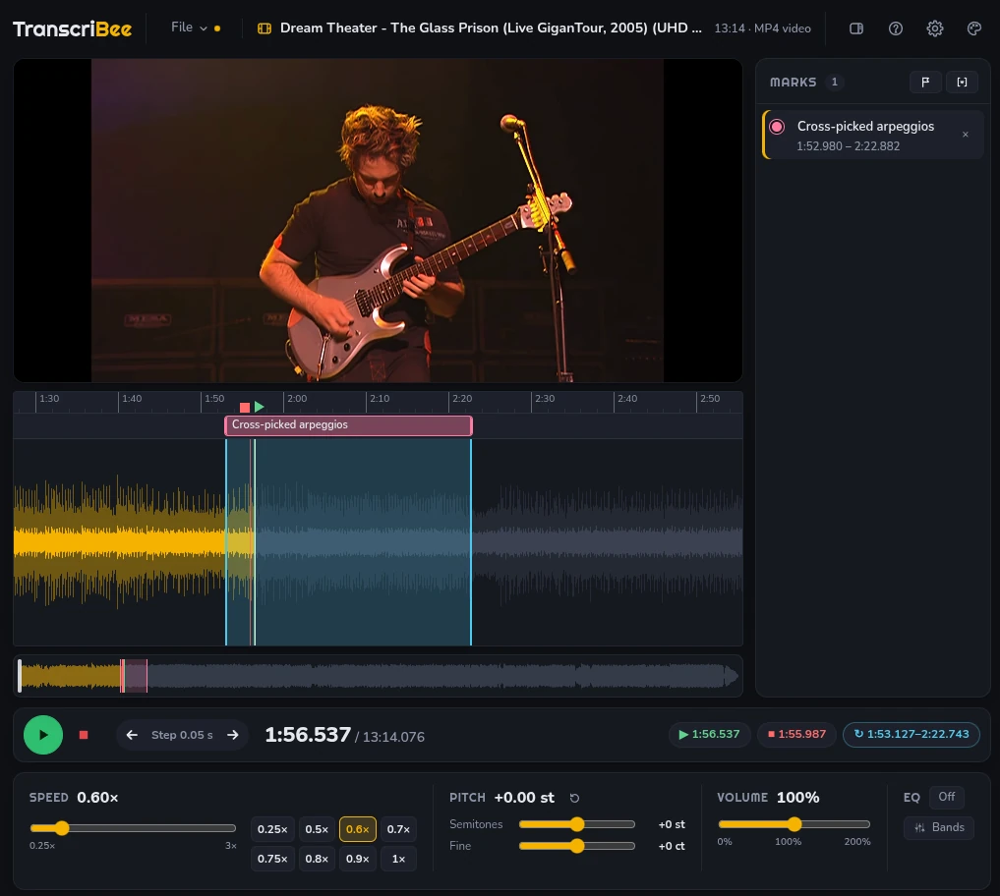

Windows
Portable .exe: nothing to install
Windows may warn about an unrecognised app the first time. Choose More info, then Run anyway.
A player for transcribing music
Open a song or a video, slow it down without the pitch sagging, loop the passage you can't quite hear, and step through it from the keyboard while you write it down.
Free, for good, and open source. No trial, no subscription, no account, no ads.
Windows, macOS and Linux
ScriBee isn't a demo of a paid app. Every feature on this page is in the download, and it stays that way.

.sbee file, linked to the song or with the song
inside.
Transcribing is listen, stop, back up, listen again, so every step of it has a key. Press ? in the app for the full list.
Its own amber-on-graphite, a light version of it, and the ones you know from your editor. Or Automatic, which follows your system.
For Windows, macOS and Linux. Free and open source.
Portable .exe: nothing to install
Windows may warn about an unrecognised app the first time. Choose More info, then Run anyway.
Disk image, .dmg, for Apple Silicon or Intel
Drag it to Applications. It isn't signed by Apple: the first time, right-click it and choose Open, or allow it in System Settings › Privacy & Security. Not yet tried on a Mac: please say how it went.
.AppImage, any distribution
Make it executable, then run it: chmod +x ScriBee*.AppImage
All releases ·
Source code, or build it yourself:
npm install && npm start